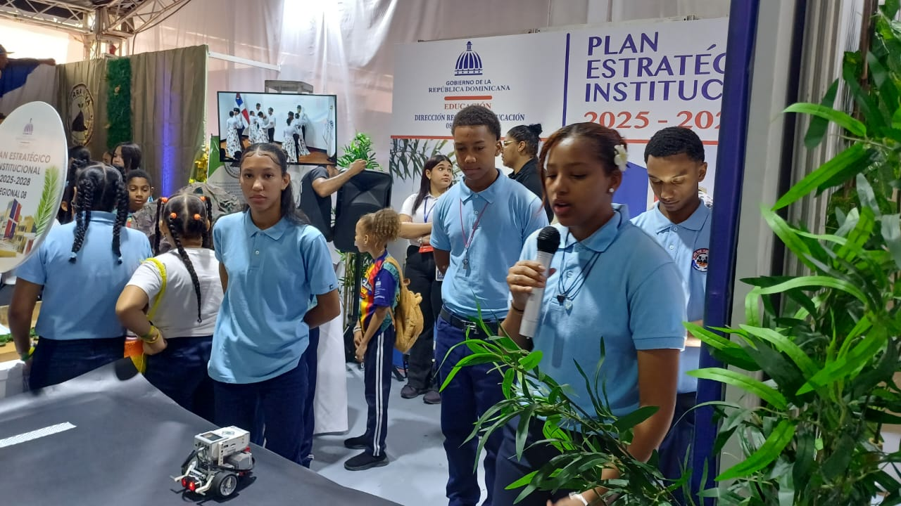
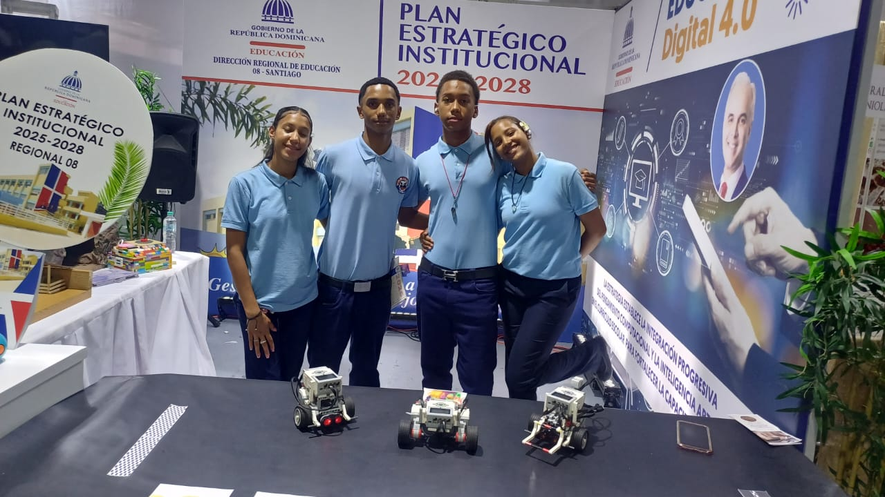
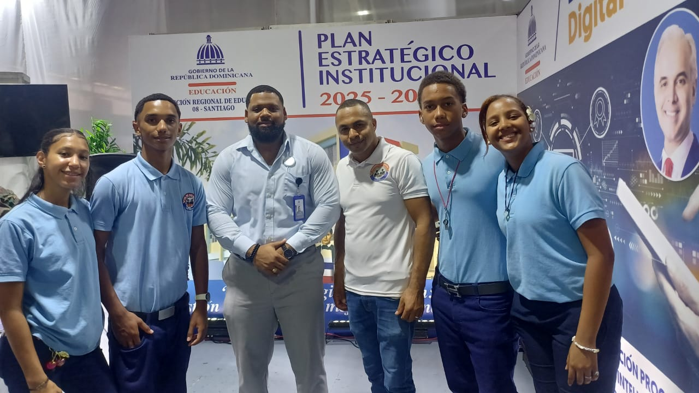

El Politécnico Plinio Martínez realizó una visita educativa a la Feria de Proindustria, una experiencia de aprendizaje orientada a fortalecer los conocimientos de nuestros estudiantes y acercarlos al mundo de la innovación, la tecnología, el emprendimiento y el desarrollo industrial.
Durante el recorrido, los estudiantes tuvieron la oportunidad de conocer diferentes espacios y propuestas vinculadas al sector industrial, observar iniciativas innovadoras y ampliar su visión sobre las oportunidades que ofrece el desarrollo tecnológico y productivo de nuestro país.
Esta actividad permitió relacionar los conocimientos adquiridos en el aula con experiencias del entorno real, promoviendo la curiosidad, la creatividad, el trabajo en equipo y el interés por descubrir nuevas ideas que contribuyan a su formación académica y profesional.
La visita también representó una oportunidad para motivar a nuestros jóvenes a reconocer el valor de la educación técnica como una vía para desarrollar competencias, identificar oportunidades y prepararse para los desafíos del futuro.
Con esta iniciativa, el Politécnico Plinio Martínez reafirma su compromiso con una educación integral, práctica e innovadora, que conecta el aprendizaje con la realidad y fomenta en los estudiantes el deseo de aprender, emprender y transformar su entorno.
¡Seguimos educando, formando y trabajando para construir un futuro lleno de oportunidades!

